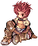
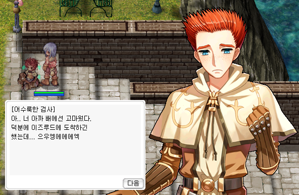
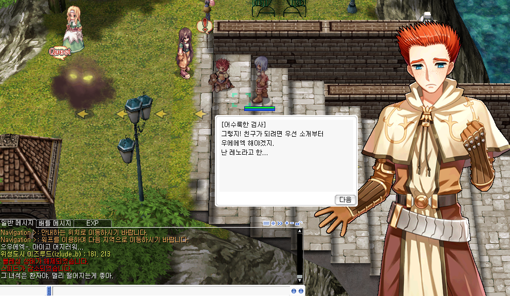
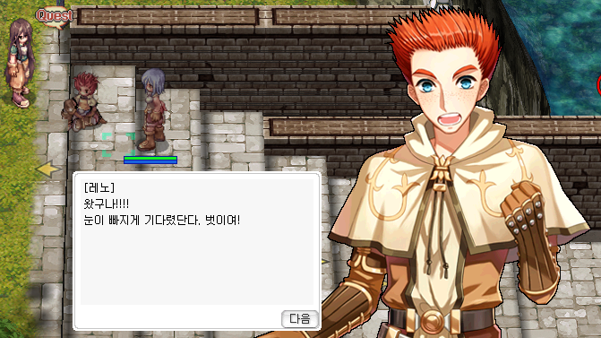
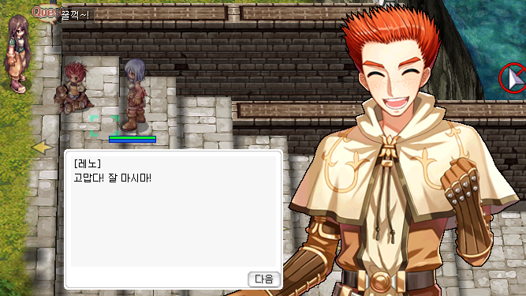
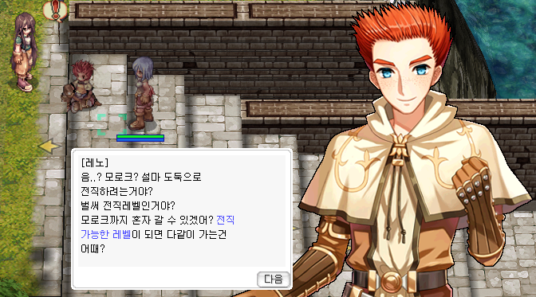

Map-Empfehlungen pro Level-Range, vollständiger Episode-1-Walkthrough mit allen Quests und Belohnungs-Equipment, EXP-Booster mit Acquisition-Details und 2. Job-Transfer-NPCs.
📈 Level-Routen 1–99
Zero hat die Monster-HP rebalanciert, daher sind die besten Maps anders als auf Renewal-Servern. Diese Liste basiert auf TWRoZ-verifiziertem Community-Wissen.
Kernregel: Kein EXP-Penalty, aber die Drop-Rate sinkt um 50% wenn Level-Differenz zum Mob ≥ 40. Episode-1-Quest (unten) gibt den größten initialen EXP-Bump.
Level
Map
Mob
Tier
Notizen
1–11
Criatura Academy
Tutorial-Mobs
S
Free-Gear + Base 11 allein aus Quest-Kette
12–22
pay_fild07 / mjolnir_02
Wolf, Coco, Savage Babe
A
Eden 12–26 Quest-Stack
23–35
prt_fild08, gef_fild03
Poporing, Stainer, Hode
A
Besser als Payon Cave auf Zero
36–45
gef_fild10 (außerhalb Orc)
Orc Warrior, Orc Lady
S
Orc Voucher Daily + Eden 40–49
46–55
iz_dun01 Byalan F1–F2
Hydra, Vadon, Marina
A
Aco/Mage-Favorit
56–65
orcsdun02
Orc Skel, Orc Zombie
S
Heal-Bomb Prime, Eden 50–59
66–75
gl_sew02–04 GH Culvert
Zombie Prisoner, Injustice
A
Holy/Fire bevorzugt, Eden 60–69
76–85
c_tower2 / c_tower3
Clock, Punk, Alarm
S
Top-Tier auf Zero (HP scaled down)
86–94
gl_church / gl_chyard
Wraith, Evil Druid
A
Undead/Holy-Resist wichtig
95–99
juperos_01 / 02
Venatu, Dimik
A
Pre-Trans Sweet Spot
🏫 Criatura Academy — die Starter-Zone (iz_ac01)
Jeder neue Charakter spawnt hier — vor dem Episode-1-Walkthrough. Die Academy ist eine geschlossene Tutorial-Zone: Kafra-Storage und Mail funktionieren hier NICHT. Erledige alle Tutorial-NPCs vor dem Verlassen.
Captain Carocc @ iz_ac01 198,213 — Start-Dialog
Criatura Academy Staff @ 122,207 — Apple Juice trinken → 30 Novice Potions + 2 Kafra-Tickets
Information Staff (daneben) — Combination-Book-Quest
Die Episode-1-Questreihe ist die große Tutorial- und Story-Kette für frische Charaktere. Sie beginnt direkt nach dem Schiffbruch in Izlude beim Naive Swordsman (Leno), führt über die kurze Shipwreck-Island-Sequenz und mündet anschließend in eine ausgedehnte Story-Kette quer durch Payon, Izlude, Alberta und Prontera Castle. Die Kette gibt mehrere tausend Base-EXP, Job-EXP, Starter-Items, eine Starter Armor Box mit Lv-10-Set und am Ende ein Royal-Inspectorate-Waffenticket auf Lv-20-Niveau.
Empfohlener Einstieg: Direkt nach dem Job-Change (1st Class). Die XP-Pools sind statisch und somit absolut betrachtet ein größerer Schub für Lv 30er als für Lv 60er. Die Inspectorate-Waffe lohnt sich aber bis weit ins Mid-Game.
📜 Episode 1 — Quest-Walkthrough

Quest 1 · Leno's Motion SicknessIzlude · Hafen
NPC: Naive Swordsman / (Leno)
Navi:/navi izlude 180/213
Was du tust: Leno steht seekrank am Hafen und kann sich kaum auf den Beinen halten. Du bleibst bei ihm sitzen, kurz darauf taucht die Novizin Lumin auf und beschafft einen Bananensaft als Gegenmittel. Nach der Szene überlässt Leno dir den unangerührten Saft und gibt dir einen Tipp Richtung Criatura Academy, wo du dich für deinen Job-Change vorbereiten sollst. Damit ist die Quest abgeschlossen.
Belohnung: 4.479 Base-EXP · 50 Job-EXP · 5× Banana Juice
Dialog-Screenshots

01 · Leno am Pier

04 · Lumin taucht auf

13 · Lumin kehrt zurück

15 · Leno nimmt den Saft

19 · Plan für später
Reise per Schiff von Shipwreck Island nach Izlude und sprich am Hafen den seekranken Schwertkämpfer (Naive Swordsman) auf izlude 180/213 an.
Bleib in der Szene — Leno bedankt sich für die Hilfe an Bord, hat aber weiterhin starke Übelkeit.
Wähle den Dialog "Ihn ansprechen" anstatt ihn liegen zu lassen, sonst startet die Quest-Sequenz nicht.
Lumin (Novizin) erscheint zwei Felder links neben Leno und stellt sich vor.
Lumin bietet Banana Juice gegen die Seekrankheit an — Leno lehnt zunächst angewidert ab.
Lumin verschwindet kurz, um beim Heiler in der Criatura Academy ein passendes Mittel zu organisieren.
Warte auf das Wiedererscheinen von Lumin und nimm die Sondertränke entgegen.
Leno trinkt das Mittel und bedankt sich; die Übelkeit lässt nach.
Lumin verabschiedet sich Richtung Morocc (Thief-Job-Change) und verlässt die Szene.
Leno überlässt dir die übrigen 5× Banana Juice und gibt dir den Tipp, dich in der Criatura Academy auf den Job-Change vorzubereiten.
Folge-Hinweis von Leno: Trainings-Felder rund um Prontera, dann Payon-Cave als nächste Station.
Quest 2 · Shipwreck EscapeShipwreck Island
NPCs: Injured Person → Captain Carocc
Map: Shipwreck Island
Was du tust: Du strandest mit der Crew auf einer kleinen Insel. Zuerst sprichst du den verletzten Überlebenden an und erfährst, dass die Mannschaft verstreut ist. Anschließend findest du Captain Carocc, der die Lage einschätzt und dich beim Sammeln der restlichen Schiffsbrüchigen mitnimmt. Am Ende der Sequenz wird der nächste Schritt — der erste echte Kampf — direkt eingeleitet.
Tutorial-Sequenz: Du erwachst nach dem Schiffbruch an Land auf Shipwreck Island.
Sprich den Injured Person in der Nähe deiner Startposition an — er erklärt, dass die Crew verstreut ist.
Folge dem Pfad zu Captain Carocc und sprich ihn an.
Carocc übernimmt das Kommando und erklärt die Lage — beide Sprachen (Englisch / Koreanisch) lassen sich per Klick auf die Dialogblase umschalten.
Stimme zu, beim Sammeln der restlichen Schiffbrüchigen zu helfen.
Die Quest endet automatisch und leitet nahtlos in The First Battle über.
Belohnung wird ausgegeben: 2.845 Base-EXP, 100 Job-EXP.
Quest 3 · The First BattleShipwreck Island
NPC: Captain Carocc
Map: Shipwreck Island
Was du tust: Direkter Anschluss an Shipwreck Escape. Captain Carocc führt dich in deinen ersten geskripteten Kampf gegen die Inselmonster — eine angeleitete Tutorial-Begegnung, die Targeting, Auto-Attack und Heal-Item-Nutzung absichert, bevor du die Insel verlässt.
Belohnung: Story-Fortschritt (kein eigener EXP-/Item-Reward in der Criatura-Datenquelle).
Direkter Anschluss aus Shipwreck Escape — Captain Carocc führt das Tutorial weiter.
Der Captain erklärt die Grundmechaniken: Targeting per Klick, Auto-Attack, Inventar-Heal-Items.
Folge dem Captain in den eingegrenzten Tutorial-Bereich auf Shipwreck Island.
Engagiere die ersten Insel-Mobs (geskripteter Wave-Encounter) und teste das Targeting.
Verwende mindestens einmal ein Heal-Item aus dem Starter-Inventar, um die Item-Nutzung zu lernen.
Schließe den Kampf ab — der Captain bestätigt, dass du bereit für die Insel-Verlassen-Sequenz bist.
Story-Fortschritt freigeschaltet (kein eigener EXP-/Item-Reward in der Criatura-Datenquelle).
🗺️ Episode 1 Part 1 — Story-Hauptkette (Payon → Prontera)
Nach Shipwreck Island startet die eigentliche, lange Episode-1-Kette in Payon. Sie führt dich quer durch Midgard und endet im Untergrund von Prontera Castle. Insgesamt sind es ~32 Quest-Schritte, die nacheinander abgehakt werden. Hier die kondensierte Reiseroute:
Payon173,171 — Iris startet die Kette. Sie schickt dich zur Schmiede zu Chaos, der dir das Start-Equipment übergibt. Danach Rückmeldung bei Iris.
Payon Forest — Treffe Hallyang Hanul und den Archaeologist. Töte 5 Porings und sammle 5 Archaeologist Research Journals, dann zurück zum Archäologen.
Payon Cave 1F — Suche den verborgenen Ort, ziehe das namenlose Schwert heraus, sprich mit der Silver-haired Girl und triff Shigrun, die aus der Höhle entkommt.
Payon Forest → Payon — Bericht an Archäologen, dann an Iris.
Izlude — Sprich mit Verito, Shukern und Estalda, um Informationen einzusammeln.
Alberta — Triff Lushak und den Schmied Walter. Walter schickt dich zurück in den Payon Forest: 5 Willows + 5 Fabres töten, Barren Trunk und Shiny Hard Ore sammeln. Walter schmiedet daraus die Shining Armor, die du Lushak bringst.
Prontera Castle — Royal Guard Knight bringt dich ins Royal Palace Inspectorate. Chefermittler Sahario übergibt dir das Inspectorate-Team-Token.
Prontera Underground Culvert — Token validieren lassen, Familiars und Thief Bugs töten, 5 Samples sammeln, Bericht an Sahario.
Prontera Field — 10 Stainer killen, Bericht an Sahario.
Prontera Pub — auf den Golden Mask warten (Stealth-Auftrag scheitert), dann beim Bartender melden, dann zurück zu Sahario.
Prontera Castle Banquet Room — Treffen mit Commander Spiegel. Anschließend ins Castle-Untergeschoss: 10 Zombies töten, 5 Überlebende mit Restorative Medicine stabilisieren und 5 Leichen verbrennen, bevor sie wieder aufstehen.
Castle Basement 2F — 10 verwandelte Ghouls erlegen, dann den Zombie of Anger umlegen und das Ymir's Heart Fragment bergen. Final-Bericht bei Spiegel und schließlich Sahario.
Belohnungsbox: Sahario übergibt am Ende eine Special Reward Box mit jeweils 10× [Event] Speed Potion, Unlimited Drink, Challenge Drink, Power Drink, Finest Course Meal, Mimir's Spring Water und Life Insurance. Plus die Lv-20-Inspectorate-Waffe (siehe unten).
🎁 Episode-1-Belohnungen
Die wichtigsten Belohnungs- und Schlüssel-Items aus der Episode-1-Kette als Item-Cards. Die Stats der einzelnen Set-Teile findest du weiter unten in den Tabellen.
📦Starter Armor BoxQuest-Belohnungsbox · Lv-10-Set
Quest-Belohnung Episode 1 · öffnet auf Base 10
Enthält das komplette High-Adventurer-Set [1] (alle Klassen, account-bound)
Inhalt: High Adventurer Suit, High Adventurer Hood, High Adventurer Sandals, High Adventurer Clip
Plus 1× Beginner Metal Weapon Ticket (Lv-1-Waffe nach Wahl)
Novice Magnifier: Ctrl + Left-Click auf unidentifizierte Items. Mehrere Charges pro Stack. Novice Gear Exchange Vending Machine (an jedem Job-Changer): 5 Novice-Teile → bis zu 16 Kafra Storage Tickets + 1 Hair Coupon.
Starter Armor Box — öffnet auf Base 10
Die Box enthält das High-Adventurer-Set (für alle Klassen, account-bound) plus ein Beginner Metal Weapon Ticket. Das Set ersetzt die Novice-Teile und trägt locker bis Lv 30+:
Komplett-Set-Bonus (alle vier Teile getragen): ATK +10, MATK +10, MaxHP +150, MaxSP +50, HIT +10.
🔮 Trans-Fortsetzung: Die Trans-only Episode-Erweiterung (Sigrun, Memorial Dungeon Xavier, Thanatos Tower MD) ist auf TWRoZ noch nicht verfügbar.
🏆 Eden-Group Missionen — Top-5 EXP/h
⚠️ Unklar ob Eden Group im Global-Release existiert. Bitte vor dem Planen verifizieren, bevor man die Leveling-Strategie darauf aufbaut. Eden ist ursprünglich ein Renewal-Konzept; RO Zero kann eine eigene Variante haben, eine umgebaute Version anbieten — oder es schlicht weglassen. Die Daten unten stammen aus TWRoZ und sind dort verifiziert, aber für den Global-Release nicht bestätigt.
Mission Boards auf Eden 2F (moc_para01). Rewards bei Sprakki @ 35,39. Daily Reset 4:00 Server. 3h Cooldown pro Mission. Wahl zwischen normalem EXP (Base+Job) oder Doubled-Job-EXP.
Eden 70–79: Stings (gef_fild10) — beste EXP/h Mid-Game
Eden 86–99: Anolian / Alligator (cmd_fild03, iz_dun04)
Eden 60–69: Orc Skel / Zombie (orcsdun02)
Eden 40–49: Orc Warrior (gef_fild10) — 40er Power-Spike
Eden 50–59: Greatest General / Bigfoot (pay_fild04 / pay_fild05)
📅 Regionale Daily-Quests
Region
Key-NPC
Min Lv
Currency
Kunlun
NPC in Alberta (10kz)
90+
Tiger Footskin / Buddhist Gem
Louyang
Suei (Dragon Soul Quest)
70+
Earth Dragon Coin
Amatsu
Suzuki Sukoshi (Amatsu Dun Entry)
70+
Spirit Stone
Hugel
Marin (hugel)
60+
Fancy Apple, Monster Race Coins
Einbroch/Einbech
Mine Foreman / Lighthalzen Pair
60+
Coal, Steel, Iron Ore
Veins
Veins Siblings (Karakas, Laica)
90+
Rough Mineral
Moscovia
Boyarsky (Forest Spirit Chain)
75+
Les / Worn Coin
Cooldowns: 16–23h pro Quest. Erster Complete einer Region gibt einmalig Consumable-Bonus + erhöhten EXP. Wiederholungen geben nur standard EXP.
⏫ EXP-Booster — Details
Alle auf Zero bestätigten EXP-Booster mit Acquisition und Stacking-Verhalten:
Booster
Quelle
Dauer
Bonus
Stackt mit?
Inn Buff
Inn Employee in aktuell „gebuffter" Stadt. Server-wide Announcement stündlich — RNG welche Stadt aktuell aktiv ist (Prontera, Izlude, Payon, Geffen, Morroc, Alberta)
30 min
+10% Base/Job EXP
Ja, mit allem
Emily (Poring Village)
NPC Emily @ Poring Village 9-Uhr-Position (porin_vil)
30 min
+10% EXP + Inc. Agi + Blessing
Ja — aber nur bis Base 50 nutzbar
Premium Package (VIP)
Cash-Shop — „Essential Package"
30 Tage
+20% EXP + +20% Drop
Additiv
Battle Manual
Cash-Shop, Events
30 min
+50% EXP (Mobs + Quest-Turn-Ins)
Multiplikativ mit VIP
Thick Battle Manual
Cash-Shop Variante
60 min
+55% EXP
Wie Battle Manual
Party-Bonus
Automatisch in valider Party
Während Party
+20% pro Member ab 2 (bis ~+100% bei 6)
Ja
Eden-Mission-Reward
Eden HQ Mission Board (Quest-Reward selbst, kein Buff)
Party-Regeln (wichtig): Members müssen innerhalb 31×31 Tiles vom Leader sein. Nur 1 Char pro Master Account zählt zum Party-Bonus. Level-Share-Range: ±15 Base-Level. Leader offline/out-of-range → kein Bonus für andere.
Zusätzliche EXP-Quellen
Criatura Academy Graduation Rewards — einmalig pro Char